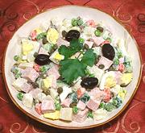

|
Salad Olivier / Russian SaladRussia, Poland, & Everywhere else - Salat Oliv'ye | ||||
| Makes: Effort: Sched: DoAhead: |
4-1/2 # ** 12 hrs Best |
This famous salad is made in endless variations in Russia and elsewhere. None of them much resemble the original, served by chef Lucien Olivier (see History) | |||
|
1-1/4 4 3 10 4 3 1 ---- 1/4 1/4 1/2 1/2 1/2 1/4 ---- 1 2 |
# oz oz oz oz c --- c c t T t t --- T oz |
Potatoes (1) Carrots Eggs, large Cooked Meat (2) Cucumber (3) Pickle (4) Peas, frozen (5) -- Dressing Mayonnaise (6) Sour Cream Mustard Lemon Juice Salt Pepper -- Garnish Capers Black Olives (7) |
The version presented here is mine, derived from several Russian sources and combining some pre and some post Soviet ingredients (but no grouse - see History). Make - (12 hrs - 45 min work)
|